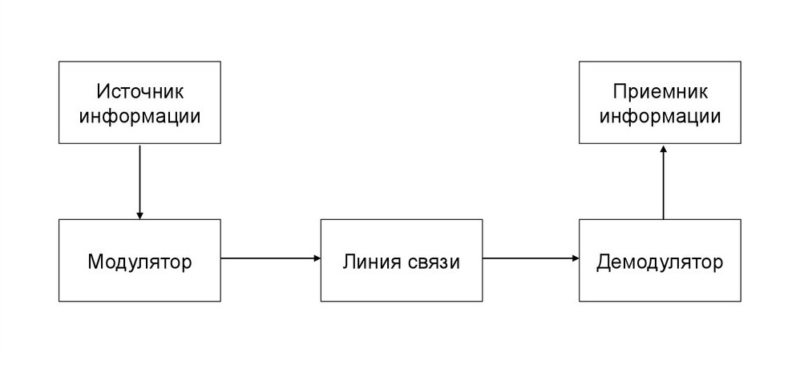

Каналы связи играют ключевую роль в передаче информации в современных коммуникационных системах. Понимание их моделей, пропускной способности и влияния шума позволяет эффективно проектировать и оптимизировать системы передачи данных.
В наше время существует множество моделей каналов связи. Зная, какая модель используется, можно понять, как именно передается и обрабатывается информация.
Выделим основные категории моделей каналов связи:
Последние два пункта относятся только к дискретным каналам, поскольку только дискретные каналы передают информации в виде символов
В самом простом виде канал связи выглядит примерно так:

Модулятор и демодулятор - кодировщик и декодировщик. В целом, это взаимозаменяемые понятия в этом контексте.
Стоит отметить, что от случая к случаю каналом связи называют ЛИБО "линию связи", через которую проходит информация, ЛИБО сразу всю цепочку путешествия информация, включая источник и приемник.
Шумом называется любое нежелательное изменение сигнала, которое может исказить передаваемую информацию.
Шум в канале является, пожалуй, одной из основных проблем, которую необходимо учитывать и с которой необходимо бороться. Шум влияет на качество передачи данных и может привести к ошибкам. Для борьбы с шумом используются различные методы, такие как кодирование с исправлением ошибок (мы разбирали ошибки ранее).
Виды шума:
Пропускной способностью канала называется максимальное количество информации, которое может быть передано через канал за единицу времени. Обычно измеряется в битах в секунду (bps).
Значение пропускной способности канала критически важно для проектирования систем связи, поскольку оно определяет, сколько данных может быть передано в заданный промежуток времени. В зависимости от выбранного подхода измерения информации, пропускная способность выражается разными формулами.
Для объемного подхода формула выглядит так: V = I • t, где V - пропускная способность канала, I - объем переданной информации, t - время передачи информации.
Для вероятностного подхода всё немного сложнее:
C = n [1 + pnlog(pn) + (1 - pn)log(1 - pn)]
Также в контексте пропускной способности стоит упомянуть вторую теорему Шеннона: "Если скорость передачи данных превышает пропускную способность канала, то невозможно передавать информацию без ошибок, независимо от используемого кодирования". Эта теорема обеспечивает возможность проектирования каналов связи, работающих почти безошибочно.